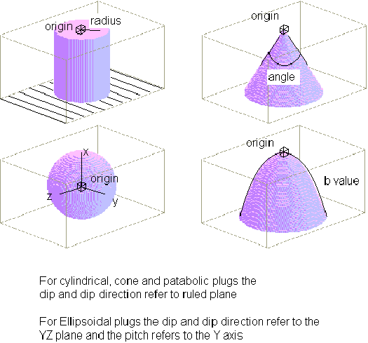

Plug
In order to define an plug event, place an Plug icon  in the History window. You will then be provided with the Plug definition window.
in the History window. You will then be provided with the Plug definition window.

Plugs can have a variety of shapes, but all have a radial symmetry about an axis which is perpendicular to the defining plane, except for ellipsoidal plugs. The plugs can have four fundamental shapes: conic, parabolic, cylindrical and ellipsoidal. The X,Y,Z coordinates define the apex of cone or parabolic plugs, one point on the central axis of cylindrical plugs (which are infinite in length) and the centre of symmetry of ellipsoidal plugs. The plug is always stope like. With plugs the defining plane is perpendicular to the central axis of the conic, parabolic and cylindrical plugs, and defines the XY plane of the ellipsoidal plugs.
| GROUP | NAME | FUNCTION |
|---|---|---|
| Form | Plug Geometry: | |
| Cylindrical | Infinite cylinder | |
| Cone | Cone | |
| Parabolic | Parabaloid | |
| Ellipse | Ellipsoid | |
| Alterations: | ||
| None | No alteration halo associated with this event | |
| Top | Alteration halo on hanging wall side of fault | |
| Bottom | Alteration halo on foot wall side of fault | |
| Both | Alteration halo on both sides of fault | |
| Edit | Brings up Alteration Profile window | |
| Edit Properties | Editing window for geophysical properties of dyke rock |
| Position | X | X position of one plug (one point on central axis of cylinder, apex of cone, apex of parabaloid, centre of ellipsoid) |
| Y | Y position of one plug | |
| Z | Z position of one plug | |
| Orientation | Dip Dir | Dip Direction of plane normal to cylinder, cone & parabaloid axes; and parallel to XY plane of ellipsoid |
| Dip | Dip of plane normal to cylinder, cone & parabaloid axes; and parallel to XZ plane of ellipsoid | |
| Pitch | Pitch of X direction for ellipsoid | |
| Scale | Radius | Radius of cylindrical plug |
| Angle | Apical angle of cone shaped plug | |
| B Value | Width of plug at depth Z is defined by (Z1/2 * B/10) | |
| Scale (Ellipsoid) | X Axis | Length of X axis of ellipsoid for ellipsoidal plugs |
| Y Axis | Length of Y axis of ellipsoid for ellipsoidal plugs | |
| Z Axis | Length of Z axis of ellipsoid for ellipsoidal plugs |

Noddy · open source under the MIT licence · Loop3D/noddy_qt